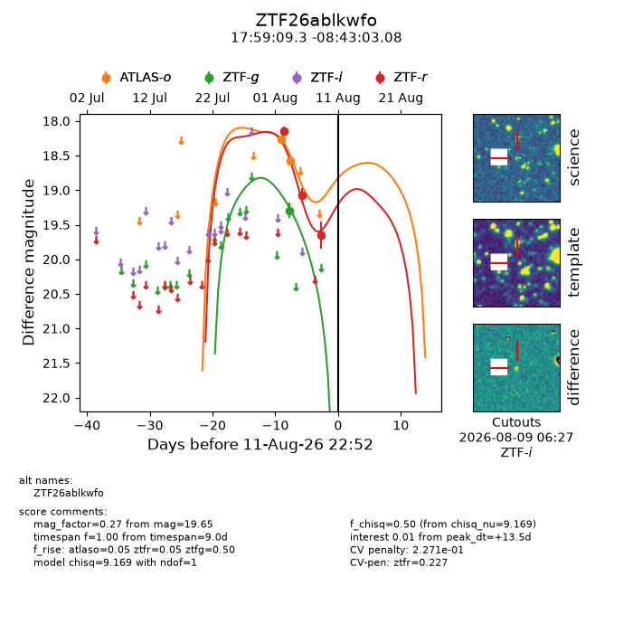
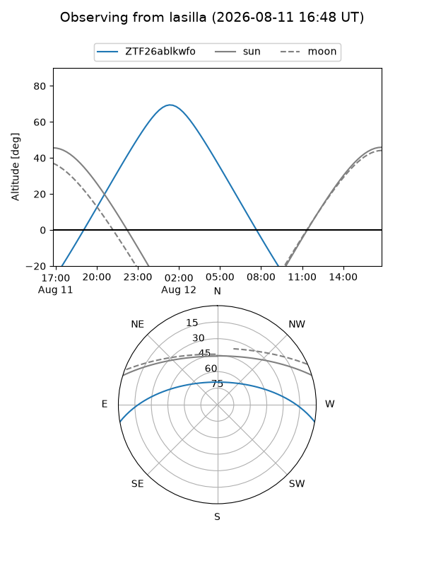
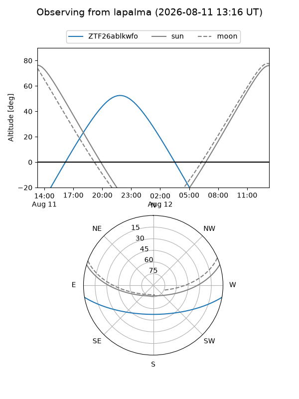
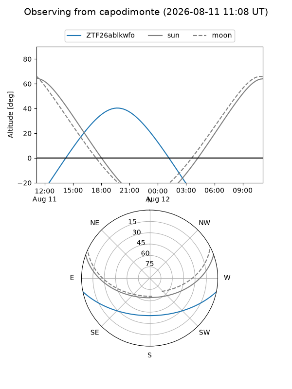
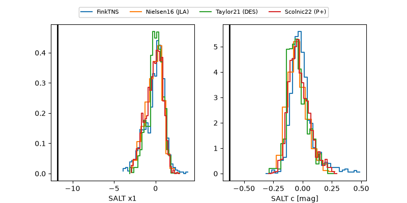

ZTF26ablkwfo
Target ZTF26ablkwfo at 2026-08-12 10:42
Aliases and brokers:
FINK-ZTF: ztf.fink-portal.org/ZTF26ablkwfo
Lasair-ZTF: lasair-ztf.lsst.ac.uk/objects/ZTF26ablkwfo
ALeRCE-ZTF: alerce.online/object/ZTF26ablkwfo
Direct TNS query: direct search
alt names
ZTF26ablkwfo (ztf,fink_ztf)
Coordinates:
equatorial (ra, dec) = 269.7888,-8.71752
equatorial (HMS+DMS) = 17:59:09.31,-08:43:03.08
galactic (l, b) = (19.1137,+7.46023)
Flags:
peak dt: +14.0
likely cv: !!
Photometry:
last atlaso=18.58, ztfg=19.29, ztfr=19.65
2 atlaso, 1 ztfg, 3 ztfr detections
Lightcurve

Visibility



Additional plots
